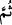

sebebiyle ondan daha ileri bir anlama sâhiptir. Bu iki kelime arasındaki farkın el-
Gaffâr’ın keyfiyet bakımından, el-Gafûr’un ise kemmiyet bakımından mübâlağa ifade
etmesi olduğu da söylenmiştir.”
Îman edilmesi gereken şeylere “inanan,” şer‘an ve aklen doğruluğu kabul edilen
“yararlı iş yapan” kimseye karşı da çok bağışlayıcıyımdır. Bu ifade, taşkınlığa düşmüş
olanı îman ve tevbeye teşvik etmek içindir.
“Sonra” böylece “doğru yolda giden” hidâyet üzere istikâmet sâhibi olan ve ölene
kadar bu hali muhafaza eden “kimseyi bağışlarım.” Burada hidâyet üzere devam
etmeyen kimsenin mağfiretten uzak olduğuna işaret vardır.
“__WORD__ /sonra” kelimesi, sıralamayı bildirmek içindir. Bahru’l-ulûm’da şöyle der:
“Sonra” kelimesi, hayır üzere istikamet sâhibi olmanın hayırdan sonra geldiğini ve
ondan üstün olduğunu belirtmek içindir. Çünkü ondan daha üstün ve yücedir. Çünkü işin
esası ondadır. İnsanların ayaklarının kaydığı nokta odur.
İbn Atâ der ki: “Şu da muhakkak ki ben, tevbe eden” yâni ben muhâlefeti bırakıp
muvâfakat yoluna dönenleri, Allâh’ın bu konudaki vaadlerini doğrulayanları ve
Rasûlullah’ın sünnetine tâbi olanları “sonra da doğru yolda giden kimseyi bağışlarım”
Yani bu doğru yolda ömrünce kaim olanları, bundan başka bir yolda olmayı da arzu
etmeyenleri çok bağışlayıcıyımdır.
Eğer dosdoğru yol istersen sünnet yoluna git
Sünnetlerden minnetlerin sâhibinin rızâsına bir yol olur
O kimsenin gözünün kirpikleri keskin diş gibi olsun
Eğer ömründe sünnetsiz bir zaman isterse
et-Te’vîlâtü’n-Necmiyye’de şöyle der: “tevbe eden” taşkınlıktan Rahmân’a ibâdete
dönen, rubûbiyyete ubûdiyyet ile “yararlı iş yapan, sonra doğru yolda giden” o
hazretin vehm ve hayal kirinden münezzeh olduğunun, rubûbiyyetin kâim ve ubûdiyyetin
dâim olduğunu kesin olarak bilen “kimseyi bağışlarım.”
Bil ki tevbe, sabun gibidir. Nasıl ki sabun görünen kirleri arıtırsa, tevbe de içimizdeki
kirleri, yani günahları giderir.
Rivayet edilir ki bir adam Dîneverî’ye şöyle dedi: “Ben ne yapayım? Ne zaman
Mevlâ’nın kapısına dursam bir musîbet beni ondan uzaklaştırıyor.”
Dîneverî ona şöyle cevap verdi:
“Annesinin dövdüğü çocuk gibi ol. Onu her dövdüğünde kendisini annesinin kucağına
atar. Annesi onu bağrına basana karar böyle yapmaya devam eder.”
Tevbe üç türlüdür: Avâmın tevbesi, günahlardandır. Havâssın tevbesi, zellelerden